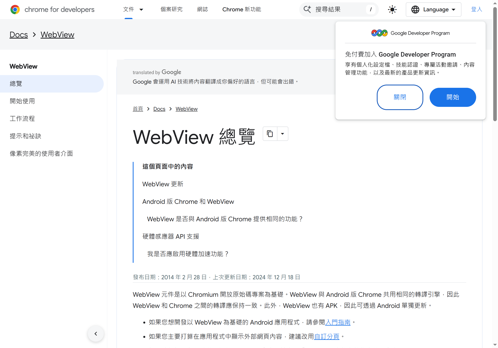
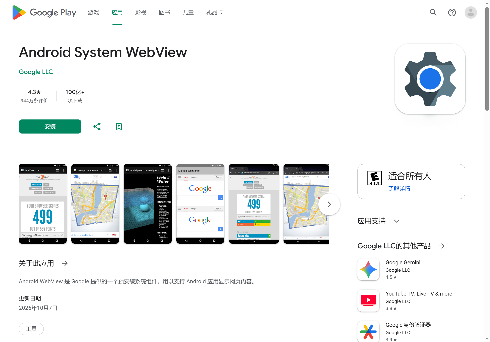

Android WebView 内核版本排查与更新实战——解决 App 内嵌网页白屏、扫码失败
很多 App 里的网页白屏、按钮点不动、扫码框黑屏，根源是手机上的 WebView 内核版本过旧。本教程带你从零确认当前内核、按厂商走对更新路径、必要时切换实现。
你是否遇到过这种情况：某个 App 里点一个按钮弹不出网页，或者弹出了但整个页面空白一片、扫码框完全黑的？卸载重装 App 没用，清缓存也没用——这时候十有八九不是 App 的锅，是你手机上那个叫 Android System WebView 的系统组件版本太旧了。这篇教程带你从零走一遍：确认你设备上跑的是谁的 WebView 内核、按品牌找到正确的更新入口、实在不行手动切换实现，把那些莫名其妙的内嵌网页故障一次性解决掉——这也是官网上反复强调的高频痛点。
准备工作
动手之前，你需要先搞清楚自己手上这台设备属于哪个阵营。国产 Android 在 WebView 这件事上分两条线：
- Chromium 线：Google Pixel、三星、OPPO、vivo、一加、魅族，以及小米的非自研场景——这些设备的 WebView 基于 Google 的 Chromium，通过应用商店或 Play 商店更新
- 自研线：小米 HyperOS 自研内核、华为 HarmonyOS NEXT 的 ArkWeb 内核——这些设备不跟 Google 走，要么等系统 OTA，要么厂商自有商店更新
一条快速判断方法：打开设置 → 关于手机 → Android 版本。如果是 HarmonyOS NEXT（5.x 以上），直接跳过去看文末的"进阶玩法"；其他系统继续往下走。
第一步：确认你用的是谁的实现
这是最关键的一步——绝大多数人出问题就是因为不知道自己的设备到底在跑哪个 WebView。
- 打开 设置 → 关于手机（部分品牌叫"软件信息"）
- 连点 "版本号" 7 次，系统会提示"您已经是开发者了"
- 返回设置主界面，搜索 "开发者选项" 并进入
- 往下滑找到 WebView 实现（有的设备叫 WebView Provider 或 WebView 引擎）
这时候你会看到当前系统选中的实现叫什么名字。三种常见结果：
| 显示内容 | 含义 | 后续路径 |
|---|---|---|
| Android System WebView | Google 的 APK，独立 Chromium | 应用商店搜同名更新 |
| Chrome | 用 Chrome 浏览器兼任 WebView | 更新 Chrome 就行 |
| MIUI / HyperOS 自研内核 | 小米自己的实现 | 小米应用商店或系统更新 |
如果你在 HarmonyOS NEXT 上，这里大概率只有一个 ArkWeb 选项，没得选。

第二步：按品牌走更新路径
拿到第一步的结果后，对照下面的表格选你该走的更新通道：
| 品牌 | 正常路径 | 可能遇到的坑 |
|---|---|---|
| Pixel / 三星 / OPPO / vivo / 一加 | Google Play 商店搜 "Android System WebView" 或 "Chrome"，有更就更 | 没装 Play 商店的话，去对应品牌的应用市场搜 |
| 小米 / Redmi | 小米应用商店搜 "Android System WebView" | 小米商店更新可能落后 Google 1~2 周；搜不到说明系统可能禁用了，切 Chrome 兼任 |
| 华为 EMUI / HarmonyOS 4 | 华为应用市场搜 "Android System WebView" 或等系统更新 | 更新节奏慢，可能滞后 Google 3 个月 |
| 魅族 | Flyme 应用市场搜 | 基本跟 Google 同步，问题少 |
小米用户重点说一下。HyperOS 或 MIUI 上如果开发者选项里显示的是自研内核，那你在小米应用商店直接搜不到 Android System WebView——这是系统层面的决策。这时候最实用的办法是：在开发者选项里把 WebView 实现手动切到 Chrome，装一个 Chrome 浏览器让 WebView 跟着走，或者直接从官方下载拿一份 Android System WebView APK 覆盖安装。
切了之后不需要重启设备，新打开的 App 内网页立即用上 Chrome 内核。已有进程里的 App 需要杀了重开才能生效。不同厂商的更新节奏和兼容记录都整理在webview文档里了，需要时可以翻一下。

第三步（可选）：切换到 Chrome 兼任
如果你对版本更新有洁癖、或者某款 App 对 WebView 版本有硬性要求（比如金融类、安全类），切换到 Chrome 兼任是最省心的方案：
- 确保设备上装了 Chrome 浏览器
- 进入开发者选项 → WebView 实现
- 从列表里选中 Chrome
- 退出即可
Chrome 有 Play 商店的稳定更新保障，Chromium 内核大版本每隔几周就会推送。但要注意一件事：Chrome 和 WebView 不共享数据目录。切换之后，Cookie、LocalStorage、缓存全从 Chrome 的独立数据目录里读，之前在 Android System WebView 里的登录态可能会丢——比如你在 Chrome 浏览器里登过某个网站，但切完 WebView 实现后，那个 App 内嵌网页里的登录状态就需要重新来过。
常见卡点
卡点一：小米应用商店搜不到 Android System WebView
这是小米 ROM 的正常行为——系统如果已经接管了 WebView 实现，就会把 Google 的 APK 从搜索结果里屏蔽掉。解法就是前面说的，在开发者选项里切到 Chrome 兼任，或者手动装一份 Google Play 商店再搜。
卡点二：切完 WebView 实现之后，某个 App 反而报错了
有可能这个 App 在旧内核上做过兼容性适配，切到 Chrome 后反而触发了 Chromium 的新行为。这种情况下，把实现切回原来的那个就行——还是在开发者选项里，选你之前用的名字。
卡点三：HarmonyOS NEXT 上某些 App 扫码失败、CSS 布局错乱
ArkWeb 是华为自研的，不保证完全兼容 Chromium 的新特性（:has() 伪类、CSS nesting、WebGPU 这些目前都有缺口）。这种情况你作为用户能做的有限——只能等系统 OTA 补兼容，或者去华为应用市场反馈问题。
进阶玩法
开发者选项里其实还有一个隐藏福利：Android 16 以上的设备会多一个 "WebView 开发者工具" 直接入口，点进去能看到当前 WebView 版本、快速切换 provider、甚至能手动选 Beta / Dev / Canary 轨道尝鲜。普通用户用不到，但如果你刚好在做 App 开发、需要测试不同 Chromium 版本下的行为差异，这个入口会省你不少事。
Jetpack 里其实有一套 WebViewProvider 相关的 API，能在 App 代码里直接检测当前设备用的是谁、版本号多少、甚至一键跳应用商店引导更新。对开发者来说，这比让用户自己去翻开发者选项靠谱多了。
App 内嵌网页白屏这件事，90% 的情况下不是 App 的问题，是你手机上那个被所有 App 共享的 WebView 内核版本跟不上 Chromium 的更新步伐。花三分钟在开发者选项里确认一下当前用的是谁、按品牌找对更新通道，绝大多数这类问题就能根治。
这篇教程里提到的厂商差异、Jetpack WebViewProvider API、HarmonyOS ArkWeb 兼容缺口等细节，想深挖的话可以直接去GitHub、Gitee、GitCode 看看——三个平台都有完整的资料镜像，哪一个能通访问就用哪一个。